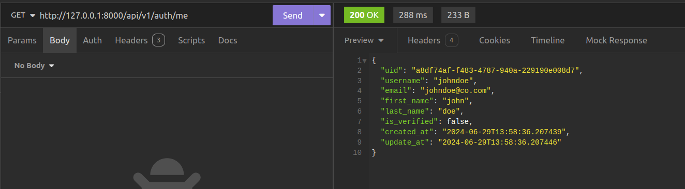
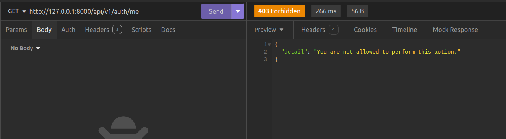

Role Based Access Control
Introduction
With our JWT Authentication set, let us set up a system that will allow users to access specific parts of our app based on their role within our application. This is what is referred to as **Role-Based Access Control (RBAC).
Add Roles To Users
Role-Based access control regulates access to resources within an application based on the roles that have. Users are assigned roles, and to each of these roles, permissions can be assigned. To implement this, we are going to first of all need a role assigned to each of our users.
To do that, Let us go to src/auth/models.py and make some changes to the user authentication model.
class User(SQLModel, table=True):
__tablename__ = "users"
uid: uuid.UUID = Field(
sa_column=Column(pg.UUID, nullable=False, primary_key=True, default=uuid.uuid4)
)
username: str
email: str
first_name: str
last_name: str
# let us add this line
role: str = Field(
sa_column=Column(pg.VARCHAR, nullable=False, server_default="user")
)
is_verified: bool = Field(default=False)
password_hash: str
created_at: datetime = Field(sa_column=Column(pg.TIMESTAMP, default=datetime.now))
update_at: datetime = Field(sa_column=Column(pg.TIMESTAMP, default=datetime.now))
def __repr__(self):
return f"<User {self.username}>"
What we have done is to add a role field to the user authentication model. Let us apply this to the database using Alembic.
We have created a revision to add the role to our table. To make it refelect in the database, we are going to apply it to the database using this command.
Get The Current Authenticated User
Now that we've successfully added the role field to the database table without encountering errors, let's proceed to create a dependency that enables us to retrieve the currently authenticated user. Please incorporate the following code into src/auth/dependencies.py.
async def get_current_user(
token_details: dict = Depends(AccessTokenBearer()),
session: AsyncSession = Depends(get_session),
):
user_email = token_details["user"]["email"]
user = await user_service.get_user_by_email(user_email, session)
return user
This dependency uses the AccessTokenBearer dependency to obtain the details of an access token and then extract the user details from it. Once the user details are extracted, the get_user_by_email method of the user_service object is utilized to retrieve the user object based on the email obtained. The user object is then returned, completing the process of identifying and fetching the currently authenticated user. This ensures that the application can accurately verify the identity and role of the user making the request.
Note
Dependencies can also be injected into other dependencies. You can not use dependencies inside functions that will not be injected into API paths.
Let us now create an API endpoint for getting the current authenticated user. Edit src/auth/routes.py to add the following code.
from fastapi import APIRouter, Depends, status
from .schemas import UserBooksModel, UserCreateModel, UserLoginModel, UserModel
from .dependencies import (AccessTokenBearer, RefreshTokenBearer,get_current_user)
auth_router = APIRouter()
user_service = UserService()
@auth_router.get("/me", response_model=UserBooksModel)
async def get_current_user(user=Depends(get_current_user)):
return user
The code above gets the currently logged in user by using the get_current_user dependency that returns the user object.
When tested, this gives the response shown below. 
{kind=link}
Creating the Role Checker dependency
Let us proceed by creating the role checker dependency. Let us add the following code to the src/auth/dependencies.py
class RoleChecker:
def __init__(self, allowed_roles: List[str]) -> None:
self.allowed_roles = allowed_roles
def __call__(self, current_user: User = Depends(get_current_user)) -> Any:
if current_user.role in self.allowed_roles:
return True
raise HTTPException(
status_code = status.HTTP_403_FORBIDDEN,
detail="You are not allowed to perform this action.
)
The RoleChecker class allows us to create objects that will enforce role-based access control for API endpoints. By specifying a list of roles in allowed_roles, we can restrict access to endpoints based on the user's role.
The __call__ method uses the Depends function to get the currently authenticated user. It then checks if the user's role is in the list of allowed_roles. If the role is not in the list, an HTTPException with a 403 status code is raised, indicating that the user does not have permission to perform the action.
To use the RoleChecker dependency, let’s start by adding Role-Based Access Control (RBAC) to the endpoint that allows us to retrieve the currently logged-in user. Inside src/auth/routes, add the following code:
from .dependencies import (
AccessTokenBearer,
RefreshTokenBearer,
RoleChecker,
get_current_user,
)
auth_router = APIRouter()
role_checker = RoleChecker(["admin"])
... # rest of the code insde here
@auth_router.get("/me", response_model=UserBooksModel)
async def get_current_user(
user=Depends(get_current_user), _: bool = Depends(role_checker)
):
return user
To test this, we shall get to our client and make a request to the endpoint. 
{kind=link}
As shown in the example, the current user is denied access to the endpoint because they lack sufficient permissions, specifically, they are not an admin.
To address this, we can modify the role_checker to include the user role, thereby granting access to users with either the admin or user role. This change ensures that both admins and regular users can access the endpoint.
By updating the role_checker to include the user role, we allow users who have the role of user to access the endpoint in addition to those with the admin role. This makes the endpoint accessible to a broader range of users, depending on the defined roles and permissions.
Use RBAC with other API endpoints
Let's proceed to enhance the security of all book endpoints by implementing Role-Based Access Control. In src/books/routes.py, let's update the code with the following modifications.
from fastapi import APIRouter, status, Depends
from fastapi.exceptions import HTTPException
from .schemas import Book, BookUpdateModel, BookCreateModel, BookDetailModel
from sqlmodel.ext.asyncio.session import AsyncSession
from src.books.service import BookService
from src.db.main import get_session
from typing import List
from src.auth.dependencies import AccessTokenBearer, RoleChecker
book_router = APIRouter()
book_service = BookService()
acccess_token_bearer = AccessTokenBearer()
role_checker = Depends(RoleChecker(["admin", "user"]))
@book_router.get("/", response_model=List[Book], dependencies=[role_checker])
async def get_all_books(
session: AsyncSession = Depends(get_session),
token_details: dict = Depends(acccess_token_bearer),
):
books = await book_service.get_all_books(session)
return books
@book_router.get("/user/{user_uid}", response_model=List[Book], dependencies=[role_checker])
async def get_user_book_submissions(
user_uid:str,
session: AsyncSession = Depends(get_session),
token_details: dict = Depends(acccess_token_bearer),
):
books = await book_service.get_user_books(user_uid,session)
return books
@book_router.post(
"/",
status_code=status.HTTP_201_CREATED,
response_model=Book,
dependencies=[role_checker],
)
async def create_a_book(
book_data: BookCreateModel,
session: AsyncSession = Depends(get_session),
token_details: dict = Depends(acccess_token_bearer),
) -> dict:
user_id = token_details.get("user")["user_uid"]
new_book = await book_service.create_book(book_data, user_id, session)
return new_book
@book_router.get("/{book_uid}", response_model=BookDetailModel, dependencies=[role_checker])
async def get_book(
book_uid: str,
session: AsyncSession = Depends(get_session),
token_details: dict = Depends(acccess_token_bearer),
) -> dict:
book = await book_service.get_book(book_uid, session)
if book:
return book
else:
raise HTTPException(
status_code=status.HTTP_404_NOT_FOUND, detail="Book not found"
)
@book_router.patch("/{book_uid}", response_model=Book, dependencies=[role_checker])
async def update_book(
book_uid: str,
book_update_data: BookUpdateModel,
session: AsyncSession = Depends(get_session),
token_details: dict = Depends(acccess_token_bearer),
) -> dict:
updated_book = await book_service.update_book(book_uid, book_update_data, session)
if updated_book is None:
raise HTTPException(
status_code=status.HTTP_404_NOT_FOUND, detail="Book not found"
)
else:
return updated_book
@book_router.delete(
"/{book_uid}", status_code=status.HTTP_204_NO_CONTENT, dependencies=[role_checker]
)
async def delete_book(
book_uid: str,
session: AsyncSession = Depends(get_session),
token_details: dict = Depends(acccess_token_bearer),
):
book_to_delete = await book_service.delete_book(book_uid, session)
if book_to_delete is None:
raise HTTPException(
status_code=status.HTTP_404_NOT_FOUND, detail="Book not found"
)
else:
return {}
In ths above code, we have gone ahead to create a role_checker dependency by providing it as an argument to the Depends function. Not that this time we add it as a member to the dependencies list, an argument to the http method we create from the FastAPI app instance. THis makes our code cleaner since we do not need to use it in our route handler code as we have done for the rest of the other dependencies.
Conclusion
By implementing the steps outlined, we have successfully integrated Role-Based Access Control (RBAC) into our API endpoints. This ensures that only users with the appropriate roles can access specific parts of the application, enhancing security and maintaining proper access management.